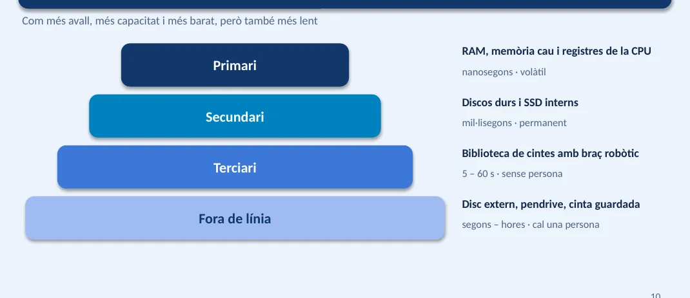
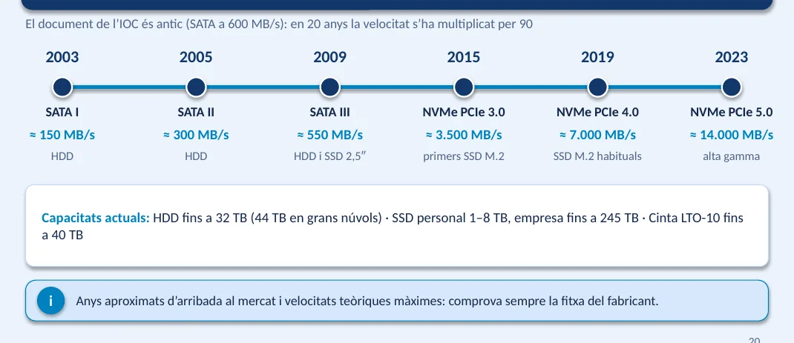
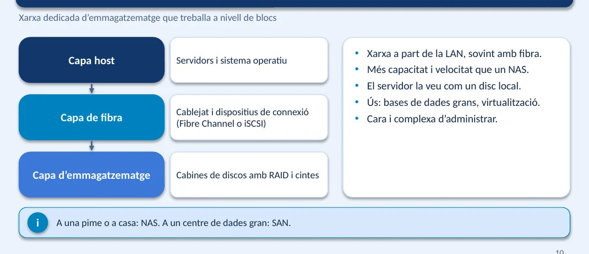
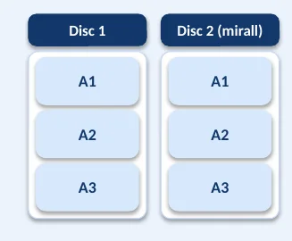
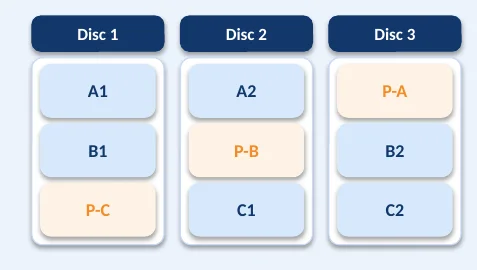
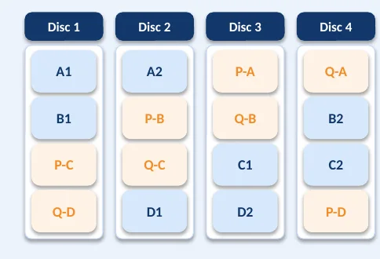
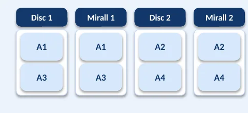
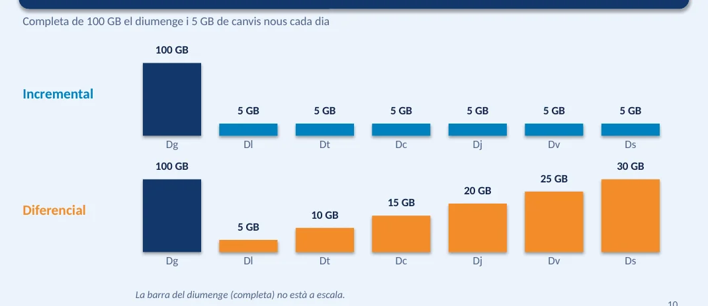
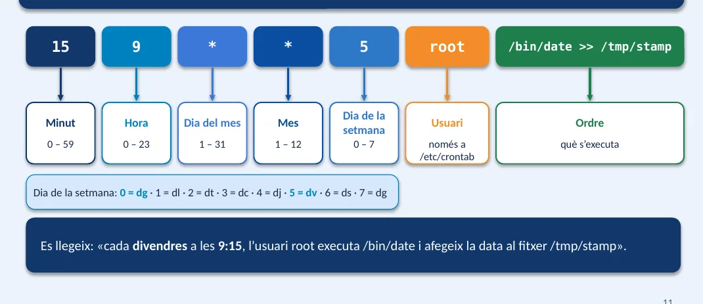

20 hores lectives. La distribució de sessions es consulta a Planificació docent.
Gestiona dispositius d'emmagatzematge descrivint els procediments efectuats i aplicant tècniques per assegurar la integritat de la informació.
Què has de saber fer?
Classificar els suports i els sistemes d’emmagatzematge (locals, en xarxa i remots), entendre la redundància (RAID), triar una estratègia de còpies amb la seva rotació i custòdia, i fer, verificar i restaurar còpies i imatges del sistema.
El RA2 es desenvolupa en quatre parts: I. Emmagatzematge de la informació i suports; II. Emmagatzematge en xarxa, núvol i redundància; III. Còpies de seguretat: estratègies, rotació i custòdia; IV. Fer, verificar i restaurar còpies de seguretat.
M0226 · Seguretat informàtica
Materials i presentacions RA2
Les quatre presentacions definitives inclouen exemples i activitats resoltes per estudiar. Les pots obrir en PDF o descarregar en PowerPoint.
Part I · Emmagatzematge de la informació i suports · PDF · PowerPoint · Apunts
Part II · Emmagatzematge en xarxa, núvol i redundància · PDF · PowerPoint · Apunts
Part III · Còpies de seguretat: estratègies, rotació i custòdia · PDF · PowerPoint · Apunts
Part IV · Fer, verificar i restaurar còpies de seguretat · PDF · PowerPoint · Apunts
Presentacions guiades de les pràctiques
Pràctica 2.2 · El nostre núvol privat amb Nextcloud · PDF · PowerPoint
Pràctica 2.5 · Imatge i restauració d’un Windows amb Clonezilla · PDF · PowerPoint
Crèdits de les presentacions: teoria de referència de l’IOC (Jordi Masfret Corrons); presentacions de base de Carles Franquesa (2023/24) i Raül Ariño (2024/25); activitats del curs passat de Raül Ariño. Adaptació i reorganització: Eduard Gutiérrez. Llicència del material: CC BY-NC-SA 4.0.
Apunts per explicar i estudiar
La teoria del RA2.
Conceptes, exemples i exercicis resolts al nivell de CFGM, a partir de les presentacions definitives.
Un ordinador, un disc o un programa es poden tornar a comprar. Les dades, no: no són fàcilment substituïbles, a diferència del programari, el maquinari i fins i tot les persones. Per això tot el RA2 gira al voltant d’una idea: guardar bé la informació i poder-la recuperar.
Actualitat
Un incendi, 858 TB perduts (Corea del Sud, 26 de setembre de 2025)
Al CPD del govern (NIRS, Daejeon) es traslladaven les bateries del SAI: van fer explosió i van provocar un incendi.
Hi va haver 96 sistemes del govern afectats: correu, webs, tràmits...
El G-Drive, el núvol de treball de 125.000 funcionaris, es va cremar.
No hi havia còpia: segons el govern, «era massa gran per fer-ne còpia». Es van perdre 858 TB.
Què n’aprenem? el maquinari es torna a comprar; les dades, no. I recorda el RA1: un SAI també és un risc si no es manipula bé.
Font: Korea JoongAng Daily (01/10/2025), TechSpot, TechRadar.
Guardem dades per tres motius:
No perdre informació
La informació rellevant s’ha de guardar de manera permanent, també sense corrent elèctric.
Estalviar temps
De vegades no hi ha temps de tornar a processar les dades: és millor guardar-les.
Punt de partida
Les dades guardades són la base de processaments posteriors (informes, bases de dades...).
Idea clau: l’objectiu és assegurar la integritat de les dades i minimitzar el risc de pèrdua.
Recorda els principis de seguretat de la informació del RA1, ordenats segons el nivell de penetració en el sistema: disponibilitat (les dades són al nostre abast quan les necessitem), confidencialitat (només les veuen les persones autoritzades) i integritat (són exactes i completes: ningú no les ha alterat). En anglès, CIA: Confidentiality, Integrity, Availability.
Una organització que cuida les dades segueix cinc passos:
1 · Classificar Saber quina informació tenim i com és de crítica.
2 · Emmagatzemar Triar el suport i la ubicació adequats.
3 · Recuperar Tenir tècniques de recuperació i continuïtat.
4 · Esborrar Esborrar de manera segura el que ja no serveix.
5 · Conservar Guardar la informació el temps que exigeix la llei.
Material físic on es guarden les dades. Per exemple, una targeta microSD, una cinta LTO o els plats d’un disc dur. Es pot desar en un calaix.
Dispositiu o unitat
Element que llegeix i escriu les dades dels suports. Per exemple, el lector de targetes o la unitat de cinta.
En un disc dur o en un SSD, suport i dispositiu van junts.
Exemple: un disc dur extern és alhora suport i dispositiu (porta els plats o la memòria i l’electrònica que hi llegeix i escriu); una cinta LTO només és el suport: cal la unitat de cinta per llegir-la.
1.3 Jerarquia dels dispositius d’emmagatzematge↑ índex
Els dispositius s’ordenen en una jerarquia: com més avall, més capacitat i més barat, però també més lent.

Jerarquia dels dispositius d’emmagatzematge.
Nivell
Exemples
Accés
Primari
RAM, memòria cau i registres de la CPU
Nanosegons · volàtil
Secundari
Discos durs i SSD interns
Mil·lisegons · permanent
Terciari
Biblioteca de cintes amb braç robòtic
5–60 s · sense persona
Fora de línia
Disc extern, pendrive, cinta guardada
Segons–hores · cal una persona
Per entendre la diferència entre els dos primers nivells:
La memòria principal (RAM) només guarda dades mentre l’equip té corrent.
L’emmagatzematge secundari (SSD, disc) les conserva sense corrent, però és molt més lent.
La memòria cau (dins la CPU) guarda les dades més usades: és encara més ràpida que la RAM.
Per això els programes s’executen a la RAM i el disc serveix per desar-ne els resultats.
Memòria virtual: quan la RAM s’omple, el sistema fa servir el disc com si fos RAM. Permet obrir més programes, però l’equip va més lent.
Compte: el NAS i el núvol no són emmagatzematge terciari. Terciari vol dir biblioteca robotitzada. El NAS i el núvol es classifiquen per la seva ubicació (en xarxa i remot), que veiem tot seguit.
El disc dur (HDD) té plats recoberts de material magnètic i capçals de lectura i escriptura. La CPU hi accedeix a través del controlador (avui, Serial ATA). El temps d’accés és de mil·lisegons (la RAM, nanosegons). Té molta capacitat i un preu baix, i per això és ideal per a còpies de seguretat. Com que és magnètic i mecànic, cal evitar moviments bruscos i camps magnètics.
Capacitats el 2026: a la botiga (NAS, empresa), fins a 32 TB (Seagate, gener 2026); en grans núvols, 40–44 TB (Seagate Mozaic 4+, WD). L’IOC parla d’uns 100 MB/s de velocitat; avui arriben fins a ≈ 280 MB/s.
L’SSD és electrònic (memòria flash), sense peces mòbils. Comparem-los:
HDD
SSD
Tecnologia
Magnètica i mecànica
Electrònica (memòria flash), sense peces mòbils
Capacitat
Molt alta (fins a 32 TB a la venda)
Ús personal: 1–8 TB · Empresa: fins a 245 TB (Micron, 2026)
El document de l’IOC és antic (SATA a 600 MB/s): en uns 20 anys la velocitat s’ha multiplicat per 90.

Evolució de les interfícies dels discos. Anys aproximats d’arribada al mercat i velocitats teòriques màximes.
Capacitats actuals: HDD fins a 32 TB (44 TB en grans núvols) · SSD personal 1–8 TB, empresa fins a 245 TB · cinta LTO-10 fins a 40 TB. Comprova sempre la fitxa del fabricant.
Amb els USB els noms comercials confonen: fixa’t en els Gbps.
Nom habitual
Velocitat
Real aprox.
Ús típic
USB 2.0
480 Mbps
≈ 40 MB/s
Teclats, ratolins, pendrives antics
USB 3.2 Gen 1 (abans USB 3.0)
5 Gbps
≈ 400–450 MB/s
Pendrives i discos externs
USB 3.2 Gen 2
10 Gbps
≈ 1.000 MB/s
SSD portàtils
USB 3.2 Gen 2×2
20 Gbps
≈ 2.000 MB/s
SSD portàtils ràpids (USB-C)
USB4
40 Gbps
≈ 3.000–3.900 MB/s
SSD portàtils
USB4 v2
80 Gbps
fins a ≈ 6.000 MB/s
SSD portàtils d’alta gamma (2026)
Idea clau: el port, el cable i el dispositiu han d’admetre la mateixa velocitat: mana el més lent.
La memòria USB (pendrive) és memòria flash: ràpida, petita i fàcil de portar. Capacitats habituals: 64–256 GB (n’hi ha d’1 TB o més). Ideal per transportar fitxers. Risc: es perd o es roba amb facilitat, per això cal xifrar-la (BitLocker To Go).
Les targetes SD i microSD es fan servir a càmeres, mòbils i consoles. Una microSD normal (UHS-I) va a ≈ 100 MB/s; una microSD Express (PCIe/NVMe), a ≈ 880–900 MB/s (la Nintendo Switch 2 només accepta aquestes per instal·lar jocs). Són poc fiables com a única còpia.
Important: els suports que es poden perdre o robar s’han de xifrar, sobretot si porten dades personals.
Cintes magnètiques (LTO)
Graven les dades en una banda magnètica amb accés seqüencial (són lentes per buscar una dada). Tenen molta capacitat i un preu per TB molt baix: s’utilitzen per a còpies de seguretat i arxiu a les empreses. Es guarden en una cintoteca i cal el lector específic. Guardades fora de línia, no estan exposades a esborrats ni a virus. Formats: DAT, DDS, DLT i LTO (el vigent).
LTO-10: cartutx de 30 TB (2025) i de 40 TB natius des del gener del 2026 (fins a 100 TB comprimits), fins a 400 MB/s sense compressió. El mateix lector LTO-10 llegeix tots dos.
Actualitat
La IA fa pujar el preu dels discos (2025–2026)
Els centres de dades d’IA compren gran part de la memòria flash (NAND) i de la RAM que es fabrica.
Preu de contracte d’un SSD de 256 GB: de 33 $ a 134 $ en un any (3r trimestre 2025 → 2026).
Western Digital té tota la producció de discs durs del 2026 venuda als grans clients.
Els discs durs també s’encareixen: de mitjana, un 46 % en quatre mesos.
Què n’aprenem? el cost és un factor de l’emmagatzematge (2.b). Cal calcular bé la capacitat que necessitem i planificar les compres de suports per a còpies.
Font: Notebookcheck (25/10/2026, dades de TrendForce); Tom’s Hardware; TechRadar.
Idea clau: no hi ha un suport «millor»: depèn del rendiment, el cost i l’accessibilitat que necessitem.
1.10 Factors de l’emmagatzematge de la informació↑ índex
Abans de triar o configurar un sistema d’emmagatzematge ens fem sis preguntes:
Factor
Pregunta
Rendiment
Quina velocitat i quin temps d’accés necessitem?
Disponibilitat
Quin percentatge del temps han d’estar accessibles les dades?
Accessibilitat
Qui hi accedeix, des d’on i amb quins permisos?
Capacitat
Quant ocupen ara les dades i quant creixeran?
Fiabilitat
Quin és el MTBF (temps mitjà entre fallades)?
Cost
Maquinari, programari i hores de feina.
Rendiment: velocitat i temps d’accés
Temps d’accés: el que triga a arribar a la dada. RAM: nanosegons; disc dur: mil·lisegons; SSD: molt menys que un disc dur.
Velocitat de transferència: MB/s que es poden llegir o escriure. La dona el fabricant o es mesura amb un programa.
Entre la RAM i la CPU la velocitat és de 50 a 100 vegades més gran que la dels discos. Per això els programes s’executen a la RAM i els discos guarden els resultats.
Temps = mida ÷ velocitat · 1 TB = 1.000.000 MB · 1 h = 3.600 s
Exemple: copiar 2 TB a un disc extern de 100 MB/s: 2.000.000 MB ÷ 100 MB/s = 20.000 s ÷ 3.600 ≈ 5,6 hores.
Disponibilitat i accessibilitat
Disponibilitat: les dades han d’estar al nostre abast quan les necessitem. S’aconsegueix amb redundància (RAID), canvi de disc en calent i clústers d’alta disponibilitat (Part II).
Accessibilitat: qui pot accedir a les dades i des d’on: localment, per la xarxa o des d’Internet. Es controla amb polítiques de control d’accés, permisos i xifrat dels suports.
Idea clau: com més accessibles són les dades, més cal protegir-ne l’accés.
Les fitxes reals solen ser en anglès. Aquest és l’exemple d’un disc per a NAS (fictici):
NAS-HDD 8TB · Product datasheet
Valor
Què vol dir
Capacity
8 TB
Quantes dades hi caben.
Interface
SATA 6 Gb/s
Com es connecta a l’equip (SATA, USB...).
Max. sustained transfer rate
up to 210 MB/s
Velocitat màxima: serveix per calcular quant triga una còpia.
MTBF
1,000,000 hours
Temps mitjà entre fallades: com més alt, més fiable.
Compte: en anglès la coma separa els milers: 1,000,000 = 1.000.000.
1.13 Benchmark i S.M.A.R.T.: l’estat d’un disc↑ índex
Tenim dues eines per detectar problemes abans que el disc falli:
Benchmark (banc de proves)
Sotmet el disc a proves de lectura i escriptura i en mesura la velocitat (MB/s). És una mesura puntual: cal fer-la expressament. Eina a Windows: CrystalDiskMark.
S.M.A.R.T.
El mateix disc guarda dades del seu estat: hores d’ús, temperatura, sectors reassignats... Es consulta de manera automàtica i pot avisar amb alertes. Eina a Windows: CrystalDiskInfo.
Idea clau: es calcula que un 60 % de les fallades de disc es poden preveure si es vigilen aquests valors.
Sí, però molt justa: 5,6 h de 6 h. Si les dades creixen, aviat no hi cabrà.
Més velocitat = finestra de còpia més curta.
Pràctica relacionada
Pràctica 2.1 · Coneix els teus discos (individual, ≈ 1 h a classe + acabar a casa): estat del disc amb CrystalDiskInfo, velocitat amb CrystalDiskMark (disc de l’equip i pendrive), fitxa tècnica del teu disc i comparativa de suports. L’enunciat és al Moodle.
Fonts: IOC · Còpies de seguretat (Jordi Masfret Corrons), ap. 1 i 2.1 · Presentacions UF2-h1, h2 i h3 (Carles Franquesa) · RA2-1 (Raül Ariño) · Pt3.1 del curs passat · Korea JoongAng Daily, TechSpot i TechRadar (2025) · Notebookcheck, Tom’s Hardware (2026) · Seagate, Micron i Fujifilm (2026) · SanDisk (2026).
Autors i crèdits
Teoria de referència (IOC): Jordi Masfret Corrons · Presentacions de base: Carles Franquesa (2023/24) i Raül Ariño (2024/25) · Activitats del curs passat: Raül Ariño · Adaptació i reorganització: Eduard Gutiérrez.
A la Part I vam classificar l’emmagatzematge segons la ubicació: local, extern, en xarxa i remot. Ara ens centrem en els dos últims i en com protegir-nos quan un disc falla. Quan les dades viatgen per la xarxa, la xarxa sol ser el coll d’ampolla:
Latència: el que triga un paquet a anar i tornar (ms). Es mesura amb ping.
Amplada de banda: quantes dades passen per segon (Mbps o Gbps).
Per passar de bits a bytes, dividim per 8: 1 Gbps ≈ 125 MB/s, 2,5 Gbps ≈ 310 MB/s, 10 Gbps ≈ 1.250 MB/s.
Les còpies per xarxa fan un ús intensiu de la xarxa i en poden reduir el rendiment.
Temps de còpia = mida ÷ velocitat de la xarxa (en MB/s) · Mbps ÷ 8 = MB/s
Exemple: 500 GB per una xarxa d’1 Gbps (≈ 125 MB/s): 500.000 ÷ 125 = 4.000 s ≈ 1 h 7 min.
2.2 Emmagatzematge en xarxa: DAS, NAS i SAN↑ índex
DAS
Direct Attached Storage. Connectat directament a un sol equip (SATA, SCSI, USB). No és en xarxa en sentit estricte.
NAS
Network Attached Storage. Un equip serveix fitxers per la xarxa local (TCP/IP).
SAN
Storage Area Network. Xarxa dedicada que ofereix blocs de disc: el servidor els veu com a discos locals.
NAS
Treballa amb fitxers: el client demana un fitxer i el NAS l’hi serveix.
Es connecta a la LAN que ja tenim (Ethernet, TCP/IP).
Protocols: SMB/CIFS (Windows) i NFS (Linux); Samba permet que s’entenguin.
Capacitat limitada. Útil per compartir fitxers i guardar còpies de seguretat.
Pot ser un ordinador complet o un servidor dedicat només a guardar dades.
Important: un NAS també és un ordinador: cal actualitzar-lo i protegir-ne l’accés.
SAN
És una xarxa dedicada d’emmagatzematge que treballa a nivell de blocs. Té tres capes:

Capes d’una SAN.
És una xarxa a part de la LAN, sovint amb fibra (Fibre Channel o iSCSI).
Té més capacitat i velocitat que un NAS i el servidor la veu com un disc local.
S’utilitza per a bases de dades grans i virtualització.
És cara i complexa d’administrar.
Idea clau: a una pime o a casa: NAS. A un centre de dades gran: SAN. DAS, NAS i SAN poden fer servir RAID per protegir les dades.
DAS
NAS
SAN
Treballa amb
Disc directe
Fitxers
Blocs
Connexió
Cable directe (SATA, SCSI)
LAN existent (TCP/IP)
Xarxa dedicada (fibra, iSCSI)
Avantatges
Fàcil, barat i ràpid
Econòmic, permisos d’usuari i RAID
Escalable i molt ràpid
Inconvenients
Només el veu un equip; no escalable
Depèn de la xarxa (latència)
El rendiment depèn de la xarxa i dels altres usuaris
Ús típic
Còpies d’un sol PC
Compartir fitxers, còpies
Bases de dades, virtualització
Cas real
Ransomware contra NAS exposats a Internet
Campanyes com Qlocker (2021) i DeadBolt (2022) van xifrar les dades de milers de NAS QNAP connectats a Internet.
Aprofitaven errors del programari i accessos mal protegits.
Un NAS ple de fitxers xifrats no serveix de còpia de seguretat.
Què n’aprenem? Un NAS no és una còpia de seguretat per si sol. No l’obris a Internet, actualitza’l, activa el doble factor i guarda una còpia fora de línia.
Font: avisos de seguretat de QNAP i premsa tècnica (2021–2022).
En l’emmagatzematge remot les dades són fora de les instal·lacions pròpies (centre de dades, núvol). Cal tenir en compte quatre aspectes:
Aspecte
Què cal tenir en compte
Seguretat
Les dades surten de l’empresa: cal vigilar les portes del darrere (backdoors).
Còpies automàtiques
Es poden programar sense intervenció humana.
Velocitat
Cal una connexió ràpida: la primera còpia pot trigar molt.
Confiança
Hem de confiar en el proveïdor del servei.
Núvol públic
Sobre Internet: Dropbox, Google Drive, OneDrive, MEGA... Gratuït fins a un límit o de pagament (HiDrive, Tresorit...). Ràpid d’activar, però depens del proveïdor i del teu compte.
Núvol privat
Servidor de l’empresa, amb accés per VPN. Per exemple, Nextcloud al servidor de l’empresa (el muntaràs a la Pràctica 2.2). Més control, però cal administrar-lo i protegir-lo.
El núvol protegeix molt bé davant de desastres locals (foc, inundacions), i molts proveïdors ofereixen eines per xifrar les dades.
Cas real
L’incendi d’OVH (Estrasburg, 10 de març de 2021)
Un incendi va destruir el centre de dades SBG2 d’OVHcloud i en va malmetre un altre.
Alguns clients tenien les còpies de seguretat al mateix edifici que els servidors: ho van perdre tot.
El 2023, un tribunal francès va condemnar el proveïdor a indemnitzar dos clients.
Què n’aprenem? Una còpia al mateix lloc no protegeix d’un desastre. Cal una còpia externa i comprovar on es guarda de debò.
Font: The Register, Data Center Dynamics (2021–2023).
Un disc és una màquina: tard o d’hora falla. RAID (Redundant Array of Independent Disks) permet seguir treballant: són diversos discos que el sistema operatiu veu com una sola unitat. Al principi la I volia dir inexpensive (barats); avui, independent.
RAID busca tres coses: mida (sumar la capacitat de diversos discos), velocitat (llegir i escriure en paral·lel en discos diferents) i fiabilitat (dades duplicades o amb paritat: pot fallar un disc sense perdre res).
Tècnica
Com funciona
Spanning
Omple el primer disc i després passa al següent.
Striping
Els blocs s’escriuen alternant els discos: més velocitat.
Mirroring
El mateix bloc s’escriu alhora en dos discos: còpia exacta.
Paritat
Dada calculada que permet reconstruir un bloc perdut.
RAID 0: els blocs es reparteixen entre els discos.
Les dades es reparteixen entre els discos. Mínim 2 discos. Màxima velocitat i capacitat (la suma de tots). Cap redundància: si falla un disc, es perd tot. S’utilitza amb arxius grans quan importa la velocitat.
Compte: RAID 0 no protegeix: només suma velocitat i capacitat.
RAID 1 · mirroring

RAID 1: cada bloc s’escriu als dos discos.
Cada bloc s’escriu alhora als dos discos. Mínim 2 discos. Si un falla, l’altre ho té tot. Capacitat útil: la d’un sol disc (50 %). Lectura ràpida; escriptura com un disc. És la màxima seguretat amb la solució més senzilla.
RAID 5 · striping amb paritat

RAID 5: dades i paritat (P) repartides entre tots els discos.
Dades i paritat repartides entre tots els discos. Mínim 3 discos (òptim 5). Pot fallar 1 disc: es reconstrueix amb la paritat. Capacitat útil: (N − 1) × disc. Escriu més lent perquè ha de calcular la paritat. És l’equilibri entre capacitat, rendiment i seguretat.
RAID 6 · doble paritat

RAID 6: dues paritats (P i Q).
Com RAID 5, però amb dues paritats (P i Q). Mínim 4 discos. Poden fallar 2 discos alhora. Capacitat útil: (N − 2) × disc. Recuperar un disc és delicat, però més segur que en RAID 5.
RAID 10 · mirall + striping

RAID 10: parelles en mirall i striping entre parelles.
Parelles en mirall (RAID 1) i striping entre parelles (RAID 0). Mínim 4 discos. Molt ràpid i segur. Capacitat útil: 50 % del total. Aguanta la fallada d’un disc per parella. És el millor de RAID 0 i RAID 1, però més car.
Comparativa
RAID 0
RAID 1
RAID 5
RAID 6
RAID 10
Discos mínims
2
2
3
4
4
Capacitat útil
N × C
C
(N − 1) × C
(N − 2) × C
N ÷ 2 × C
Tolera fallades
Cap
1 disc
1 disc
2 discos
1 per parella
Rendiment
Molt alt
Bo llegint
Bo (lent escrivint)
Bo (més lent escrivint)
Molt alt
Ús principal
Rendiment
Màxima seguretat
Equilibri
Més seguretat que RAID 5
Velocitat + seguretat
C = capacitat d’un disc · N = nombre de discos (tots iguals).
La paritat d’una línia és el XOR dels seus blocs de dades.
Si es perd un bloc, és el XOR de tots els altres de la línia (dades i paritat).
Amb 2 discos perduts hi ha massa incògnites: per això RAID 5 només en tolera un.
A0 = 1010
A1 = 0110
A2 = 0011
─────────────────────
Ap = A0 ⊕ A1 ⊕ A2 = 1111
Es perd A1:
A0 ⊕ A2 ⊕ Ap = 0110 ✓
Idea clau: compta els 1 de cada columna. Si n’hi ha un nombre senar, el resultat és 1; si és parell, 0.
2.7 RAID per maquinari, per programari i canvi en calent↑ índex
Tipus
Com és
RAID per maquinari
Una targeta controladora fa els càlculs. Més cara i amb més rendiment.
RAID per programari
El sistema operatiu fa servir la CPU. Més barat, però baixa el rendiment.
Canvi en calent
Hot swap: es canvia el disc sense apagar. Habitual en alta disponibilitat.
Quan falla un disc, es canvia, el RAID es reconstrueix i el sistema segueix funcionant.
Important:RAID no és una còpia de seguretat. Es poden perdre dades sense que cap disc falli: esborrat accidental, ransomware, error de programari, incendi o robatori. El canvi es fa a tots els discos alhora.
No es podria recuperar: hi hauria dues incògnites a cada línia. Per això existeix RAID 6.
Exercici 5 · Vertader o fals?
Un NAS treballa amb blocs i una SAN amb fitxers.
Amb 1 Gbps puc copiar uns 125 MB per segon (teòrics).
Un RAID 1 de dos discos de 4 TB dona 8 TB útils.
Si tinc RAID 5, ja no em cal fer còpies de seguretat.
Guardar la còpia al mateix CPD que el servidor protegeix d’un incendi.
Solució
Fals. Al revés: el NAS serveix fitxers i la SAN blocs.
Vertader. 1.000 Mbps ÷ 8 = 125 MB/s.
Fals. RAID 1 = la capacitat d’un sol disc: 4 TB.
Fals. RAID no protegeix d’esborrats, ransomware ni desastres.
Fals. Cas OVH: cal una còpia en un altre lloc.
Pràctica relacionada
Pràctica 2.2 · El nostre núvol privat amb Nextcloud: importar la màquina virtual, crear usuaris i carpetes compartides, versions de fitxers, client d’escriptori i monitoratge amb Netdata. L’enunciat és al Moodle; a classe la fem amb la presentació guiada.
Fonts: IOC · Còpies de seguretat (Jordi Masfret Corrons), ap. 1.1.4 i 1.2 · Presentacions UF2-h1 a h4 (Carles Franquesa) · RA2-1 (Raül Ariño) · Pt2.5 RAID i exercicis RAID-5 del curs passat · QNAP, avisos Qlocker (2021) i DeadBolt (2022) · The Register i Data Center Dynamics (OVHcloud, 2021–2023).
Autors i crèdits
Teoria de referència (IOC): Jordi Masfret Corrons · Presentacions de base: Carles Franquesa (2023/24) i Raül Ariño (2024/25) · Activitats del curs passat: Raül Ariño · Adaptació i reorganització: Eduard Gutiérrez.
En una enquesta a 1.200 organitzacions atacades, els delinqüents van intentar atacar les còpies de seguretat en el 96 % dels casos.
Segons Sophos (2026), el 66 % de les empreses amb dades xifrades les van recuperar gràcies a les còpies (el 2025, el 54 %).
Les còpies sempre connectades a la xarxa són les primeres que cauen.
Què n’aprenem? les còpies són la millor defensa... i per això són un objectiu. Cal tenir-ne alguna desconnectada (fora de línia) i provar que es pot restaurar.
Font: Bocada (19/05/2026); Sophos, The State of Ransomware 2026 (via SecureWorld, 21/07/2026).
Idea clau: una còpia que no s’ha provat de restaurar no és una còpia. Les còpies de vegades fallen: cal vigilar-les i comprovar-les.
Causa
Exemple
Error humà
Esborrats o sobreescriptures accidentals.
Fallada de maquinari
Discos, controladores, fonts d’alimentació. Tot acaba fallant.
Virus i atacs
Infecten o esborren les dades. Un usuari amb males intencions també ho pot fer.
Robatori o pèrdua
Suports i cintes de còpia que es perden o es roben.
Desastres
Foc, inundacions, problemes elèctrics.
Errors de programari
Un mal funcionament del sistema operatiu pot sobreescriure les dades.
Fer una còpia és duplicar la informació d’un suport en un altre per poder-la restaurar.
Recuperar un punt en el temps: tornar les dades a com eren en un moment anterior. Com més recent ha de ser aquest moment, més sovint cal copiar.
Seguretat de les dades: les còpies també s’han de protegir: mantenir els permisos, xifrar-les i controlar qui toca els suports.
Tipus segons la finalitat: de recuperació (després d’un desastre), operacionals (recuperar un fitxer del dia a dia) i regulades (exigides per llei).
Què copiem?
Si copiem massa, omplim el suport; si copiem massa poc, perdem informació crítica.
Què
Detall
Fitxers de dades
Documents, correu, projectes: la informació important.
Bases de dades
No es poden copiar mentre canvien: còpia en fred (aturada) o en calent (amb registre de canvis).
Sistema i configuració
Imatge del sistema per recuperar el sistema operatiu amb els programes.
Metadades
Permisos, propietaris, particions, sector d’arrencada, registre de Windows.
3.3 Models: completa, incremental i diferencial↑ índex
Completa
Copia tots els fitxers seleccionats. Gran i lenta, però la restauració és la més simple.
Incremental
Després d’una completa, només desa els canvis des de l’última còpia (completa o incremental).
Diferencial
Després d’una completa, desa tots els canvis des de l’última completa.
La primera còpia sempre és completa; després es fan incrementals o diferencials. Fixa’t com creixen durant la setmana amb una completa de 100 GB el diumenge i 5 GB de canvis nous cada dia:

Mida de les còpies durant la setmana (la barra del diumenge no està a escala).
Incremental
Diferencial
Què desa
Només els canvis des de l’última còpia (qualsevol)
Tots els canvis des de l’última completa
Mida de les còpies
Petites i ràpides de fer
Creixen cada dia
Per restaurar cal
Completa + totes les incrementals, en ordre
Completa + l’última diferencial
Restauració
Més lenta
Més ràpida
Risc
Si es perd una incremental, es trenca la cadena
Menor: només dos elements
Idea clau: incremental: poc espai, restauració llarga. Diferencial: més espai, restauració ràpida.
Incremental: completa + Dl + Dt + Dc + Dj + Dv = 6 còpies. Diferencial: completa + diferencial de Dv = 2 còpies.
Amb incrementals la cadena es trenca: només es pot restaurar fins dimarts. Amb diferencials no passa res.
Exercici 2 · Treballem amb GFS
Empresa amb el GFS d’aquest apartat: fills incrementals (Dl–Dj), pares i avis complets.
Quants suports calen en total per a un any?
Dimecres de la 3a setmana, a les 10 h, es corromp un fitxer. Quines còpies necessites per recuperar-lo?
Descobreixes que un virus va canviar un fitxer fa 5 setmanes. En pots recuperar la versió anterior? Amb quin suport?
On ha de ser l’avi? Per què?
Solució
4 fills + 4 pares + 12 avis = 20 suports.
El pare S2 (completa del divendres anterior) + els fills Dl i Dt (incrementals).
Sí: amb un avi (còpia mensual) fet abans del canvi. Els fills i els pares d’aquelles setmanes ja s’han sobreescrit.
Fora de l’edifici (caixa forta, una altra seu): si hi ha un incendi, se salva.
Exercici 3 · Detecta els problemes
Quins problemes hi veus? Com ho solucionaries? Fes servir les sis preguntes de la política.
Un alumne de SMX té un PC amb un HDD d’1 TB i un SSD de 512 GB, un disc extern de 500 GB i dos pendrives de 4 GB i 32 GB. Decideix fer còpia de tot.
Solució
Què? 1,5 TB no caben en 500 GB, i copiar el sistema i els programes no cal: només les dades importants.
On? Una sola còpia al mateix lloc: cal una segona còpia (núvol o un altre disc) guardada fora.
Quan i com? Sense freqüència: cal programar-la (completa + incrementals) i provar de restaurar.
Exercici 4 · Vertader o fals?
Amb RAID 1 no cal fer còpies de seguretat.
Per restaurar una incremental cal la completa i totes les incrementals fins a aquell dia.
Una còpia al mateix edifici protegeix d’un incendi.
Les còpies manuals són més fiables que les automàtiques.
La regla 3-2-1 vol dir 3 còpies, 2 suports diferents i 1 còpia fora.
Un mirall permet tornar a l’estat d’ahir.
Solució
Fals. RAID no protegeix d’esborrats, virus ni desastres.
Vertader. La cadena s’ha de conservar sencera i en ordre.
Fals. Cal una còpia externa (cas OVH).
Fals. Les manuals s’obliden i fallen: cal automatitzar.
Vertader.
Fals. El mirall és una rèplica de l’estat actual: per tornar enrere cal protecció contínua o còpies.
Pràctica relacionada
Les situacions B, C i D de la política de còpies (acadèmia, clínica i immobiliària) es lliuren al Moodle.
Fonts: IOC · Còpies de seguretat (Jordi Masfret Corrons), ap. 2.1–2.4 · Presentacions UF2-h2 i h5 (Carles Franquesa) · Pt5 Política de còpies (curs passat) · Bocada (19/05/2026) · SecureWorld (21/07/2026), sobre Sophos, The State of Ransomware 2026.
Autors i crèdits
Teoria de referència (IOC): Jordi Masfret Corrons · Presentacions de base: Carles Franquesa (2023/24) i Raül Ariño (2024/25) · Activitats del curs passat: Raül Ariño · Adaptació i reorganització: Eduard Gutiérrez.
3 · Verificar Comprovar que s’ha fet i que està bé.
4 · Documentar Registrar data, resultat i responsable.
5 · Provar Restaurar de tant en tant per veure que serveix.
Els passos 1 i 4 són la política de còpies de la Part III. Aquí treballem els passos 2, 3 i 5.
Actualitat
Windows va deixar de fer còpies... i no avisava bé (setembre de 2026)
Després de l’actualització de seguretat de setembre de 2026 (KB5124008), alguns equips amb Historial de fitxers no podien crear ni actualitzar les còpies.
Apareixien avisos falsos de «torna a connectar la unitat» i una data d’última còpia antiga.
Microsoft ho va reconèixer i ho va corregir amb KB5124010 (22/09/2026).
Cas clàssic: GitLab (2017) tenia cinc sistemes de còpia i cap no va funcionar quan va caldre.
Què n’aprenem? tenir còpies programades no n’hi ha prou. Cal mirar la data de l’última còpia, llegir els registres i provar de restaurar.
Font: Windows Latest (23/09/2026); WinTips (2026); informe de GitLab (2017).
A Linux fem la còpia amb una ordre i la restaurem amb una altra:
# crear la còpia comprimida
tar -czf copia.tar.gz dades
# veure què hi ha dins
tar -tzf copia.tar.gz
# restaurar a la carpeta prova
tar -xzf copia.tar.gz -C prova
# el mateix en format zip (s’obre a Windows)
zip -r copia.zip dades
tar empaqueta molts fitxers en un de sol.
c crea · t llista · x extreu · z comprimeix (gzip) · f nom del fitxer.
-C indica la carpeta on es restaura.
Un script de còpia ja fet: backup.sh
No cal escriure’l: només llegir-lo i executar-lo amb bash backup.sh.
#!/bin/bash
# Còpia comprimida de la carpeta dades
DATA=$(date +%F_%H%M)
tar -czf "$HOME/copies/copia-$DATA.tar.gz" \
-C "$HOME" dades
echo "$(date) copia-$DATA.tar.gz" >> "$HOME/copia.log"
Les línies amb # són comentaris.
DATA guarda la data i l’hora, p. ex. 2026-11-16_2200.
Cada còpia té un nom diferent: no se sobreescriuen.
El fitxer copia.log apunta cada còpia feta.
Ara volem que s’executi sol cada dia sense que ningú se’n recordi: per això fem servir cron.
Les còpies manuals s’obliden; les automàtiques, no. cron és un servei de Linux que executa ordres a les hores que li diem, sense que ningú hi sigui. Es configura a la taula de tasques (crontab): una línia per tasca. A Windows, l’equivalent és el Programador de tasques.
Una línia de cron té cinc camps de temps més l’ordre que s’executa:

> /tmp/stamp" loading="lazy">L’esquema d’una línia de cron.
Es llegeix: «cada divendres a les 9:15, l’usuari root executa /bin/date i afegeix la data al fitxer /tmp/stamp».
Idea clau: ordre dels camps: minut · hora · dia del mes · mes · dia de la setmana. Truc: «M H D M S».
On s’escriu: crontab -e o /etc/crontab?
crontab -e (el que farem)
Cada usuari té la seva taula de tasques. No porta camp d’usuari: s’executa amb el teu usuari. crontab -l mostra les teves tasques. 0 22 * * 1-5 bash /home/alumne/backup.sh
/etc/crontab (sistema)
Fitxer de tot el sistema, l’edita l’administrador. Porta el camp d’usuari entre l’hora i l’ordre. Ho veuràs en molts exemples d’Internet. 0 22 * * 1-5 root /usr/local/bin/backup.sh
Compte: canvia «alumne» pel teu nom d’usuari. Si copies una línia d’Internet amb «root», a crontab -e treu aquest camp.
Tria els fitxers: l’original i la còpia (n’hi pots posar dos per comparar-los).
Tria l’algorisme: marca SHA-256.
Calcula: prem [CALCULATE HASH].
Compara: si els dos hashes són iguals, la còpia és correcta.
Algorisme
Llargada
Ús
MD5
32 caràcters
Comparar ràpid (feble)
SHA-1
40 caràcters
Antic (feble)
SHA-256
64 caràcters
Recomanat
SHA-512
128 caràcters
Molt segur
Privacitat: fes servir webs que calculin al navegador, com aquesta. N’hi ha que pugen el fitxer al servidor: mai no hi pugis dades personals.
4.6 Mesura del rendiment i detecció d’anomalies↑ índex
A cada còpia cal anotar tres dades:
Dada
Per què
Durada
Temps total de la còpia. Ha de cabre a la finestra de còpia.
Velocitat
MB/s = mida ÷ temps. Diu si anem lents.
Mida
Mida de la còpia respecte de l’original: la compressió estalvia espai.
Exemple: una còpia de 120 GB (120.000 MB) triga 40 minuts (2.400 s): 120.000 ÷ 2.400 = 50 MB/s.
Què cal vigilar als registres (logs) i informes
Durada estranya: triga molt més o molt menys del normal; pot ser una còpia incompleta.
Mida estranya: molt petita (no ha copiat res) o molt gran (molts canvis de cop: ransomware?).
Errors: disc ple, fitxers bloquejats o tasques que no s’han executat.
Idea clau: cal mirar el registre de l’eina i els avisos del sistema cada dia, no només quan hi ha un problema.
4.7 Còpia de fitxers, imatge del sistema i Clonezilla↑ índex
Còpia de fitxers
Copia dades concretes (carpetes, documents). Ocupa menys i es fa de pressa. Per recuperar un equip sencer cal reinstal·lar i reconfigurar.
Imatge del sistema
Còpia exacta d’un disc o partició: sistema, programes i configuració. Restaura un equip complet en poc temps. Es fa amb un programa que arrenca a part: Clonezilla.
La imatge es fa amb el sistema aturat: per això Clonezilla arrenca des d’un USB o una ISO. Els passos són:
Arrenca Clonezilla Live des de la ISO o un USB.
Modedevice-image: el disc es desa en fitxers d’imatge.
Desa amb savedisk: origen = disc A (Windows), destí = disc B.
Comprova: Clonezilla verifica la imatge en acabar.
Restaura amb restoredisk: la imatge del disc B torna al disc A.
Compte: restaurar sobreescriu tot el disc de destí. Llegeix dues vegades quin disc tries.
Tipus de restauració
Tipus
Quan
Fitxer o carpeta
Recuperar un element esborrat o canviat per error.
Punt en el temps
Tornar a una versió anterior (abans d’un error o d’un virus).
Imatge completa
Recuperar tot un disc o equip després d’una fallada greu.
Desastre
Restaurar els serveis en un altre lloc o equip (pla de contingència).
Prova de fer cada exercici abans d’obrir la solució.
Exercici 1 · Llegeix i escriu cron
a–c: digues quan s’executa · d–f: escriu els cinc camps de temps.
0 8 * * 1
45 23 * * *
0 12 15 * *
Cada dia a les 21:30.
Cada dissabte a les 10:00.
Cada 2 minuts (per provar la pràctica).
Repte: dl, dc i dv a les 19:00 · i de dl a dv cada hora en punt de 9:00 a 17:00.
Solució
Cada dilluns a les 8:00.
Cada dia a les 23:45.
El dia 15 de cada mes a les 12:00.
30 21 * * *
0 10 * * 6
*/2 * * * *
Repte: 0 19 * * 1,3,5 · 0 9-17 * * 1-5
Exercici 2 · Són bones les còpies?
Has fet una còpia de 4 fitxers. Aquests són els hashes (escurçats) que has calculat:
Fitxer
SHA-256 de l’original
SHA-256 de la còpia
informe.txt
ceb7671f…10ac00
ceb7671f…10ac00
notes.txt
3c799af6…a88bd0
dd4dc89e…d8445d
fotos.zip
727a61c4…31a6c5
727a61c4…31a6c5
clients.csv
2a3994dc…3ca76a
0cbf2333…365b82
Quines còpies són correctes?
notes.txt fa la mateixa mida a l’original i a la còpia: com pot ser?
Què faries amb les dolentes?
Solució
Correctes: informe.txt i fotos.zip. Dolentes: notes.txt i clients.csv.
Canviar un 0 per un 1 no canvia la mida, però sí el hash.
Tornar-les a copiar i verificar.
Exercici 3 · Rendiment d’una còpia
Una còpia de 120 GB (120.000 MB) triga 40 minuts.
Quina és la velocitat mitjana en MB/s?
La còpia comprimida ocupa 80 GB: quin percentatge d’espai estalviem?
Si la fem per xarxa a 25 MB/s, quant triga? Cap en una finestra d’1 hora?
Solució
40 min = 2.400 s → 120.000 ÷ 2.400 = 50 MB/s.
Estalvi = (120 − 80) ÷ 120 ≈ 33 %.
120.000 ÷ 25 = 4.800 s = 80 min → no cap en una finestra d’1 hora.
Exercici 4 · Llegeix l’informe de còpies
Servidor → NAS. Cada dia canvien uns 10 GB de dades. Troba les anomalies i digues què pot haver passat. Pista: una diferencial ha de créixer cada dia respecte de l’anterior.
Data
Tipus
Mida
Durada
Resultat
Verificada
Dl 02/11
Completa
480 GB
2 h 10 min
OK
Sí (hash)
Dt 03/11
Diferencial
12 GB
9 min
OK
Sí
Dc 04/11
Diferencial
0,1 GB
1 min
OK
No
Dj 05/11
Diferencial
470 GB
2 h 05 min
OK
No
Dv 06/11
Diferencial
—
—
ERROR
No
Solució
Dc: 0,1 GB en 1 min. Una diferencial hauria de ser de més de 12 GB: no ha copiat quasi res (origen buit o mal connectat?).
Dj: 470 GB en una diferencial: han canviat gairebé tots els fitxers de cop. Possible ransomware xifrant les dades!
Dv: ERROR. Cal mirar el registre (disc ple, NAS desconnectat...). No hi ha còpia d’aquell dia.
De dimecres a divendres no s’ha verificat res: ningú no ha vist els problemes a temps.
Pràctica relacionada
Pràctica 2.4 · tar + cron i Pràctica 2.5 · Imatge i restauració d’un Windows amb Clonezilla. Els enunciats són al Moodle; la Pràctica 2.5 es fa a classe amb la presentació guiada.
Fonts: IOC · Còpies de seguretat (Jordi Masfret Corrons), ap. 2.2–2.4 · Presentació UF2-h5 (Carles Franquesa) · Pt2.7 i activitats de cron del curs passat (adaptades) · Windows Latest (23/09/2026) · WinTips (2026) · Petri · Hash File Online · GitLab (2017) · Esquema de cron: disseny propi.
Autors i crèdits
Teoria de referència (IOC): Jordi Masfret Corrons · Presentacions de base: Carles Franquesa (2023/24) i Raül Ariño (2024/25) · Activitats del curs passat: Raül Ariño · Adaptació i reorganització: Eduard Gutiérrez.
Pràctiques del RA2 en l’ordre en què es fan. Els enunciats i el lliurament són al Moodle.
Pràctiques del RA2
Pràctica 2.1 · Després de la Part I · individual · ≈ 1 h a classe + casa · CA 2.a, 2.b, 2.h · Continguts 2.1, 2.6, 2.8
Coneix els teus discos
Estat del disc amb CrystalDiskInfo, velocitat amb CrystalDiskMark, fitxa tècnica del teu disc i comparativa de suports.
Pràctica 2.2 · Després de la Part II · individual · ≈ 2 h a classe + casa · CA 2.c, 2.h, 2.i · Continguts 2.2, 2.6, 2.8
El nostre núvol privat amb Nextcloud
Servidor Nextcloud en una màquina virtual: usuaris i carpetes compartides, versions, client d’escriptori i monitoratge amb Netdata. Presentació guiada.
Pràctica 2.3 · Després de la Part III
Pendent de concretar
S’anunciarà al Moodle.
Pràctica 2.4 · Després de la Part IV
Còpies amb tar i cron
Còpia i restauració amb tar i un script, i programació amb cron.
Pràctica 2.5 · Després de la Part IV · individual · ≈ 2 h a classe + casa · CA 2.g, 2.j · Continguts 2.5, 2.7
Imatge i restauració d’un Windows amb Clonezilla
Crear la imatge d’un Windows en un segon disc, provocar un «desastre» i restaurar-lo. Presentació guiada.
Altres activitats
Quatre treballs avaluables, T4–T7, i exercicis guiats integrats en les sessions. Tots els treballs tenen el mateix pes dins Pt. Les activitats amb asterisc tenen lliurament independent a Competència digital del centre.
T4 · Recurs compartit en xarxa
Contingut 2.2 · Criteri 2.c.
Al servidor de laboratori, crea una carpeta amb dades fictícies i comparteix-la amb SMB o NFS segons la imatge preparada.
Defineix els comptes i permisos de lectura i edició. Anota ruta, servidor i protocol.
Accedeix des d’un client amb cada rol i comprova una operació permesa i una de denegada.
Lliura configuració, ruta d’accés i matriu de resultats. Valorem recurs operatiu (4), permisos i comprovacions (4) i informe (2).
T5 · Rendiment i detecció d’anomalies
Contingut 2.8 · Criteri 2.b.
Identifica dispositiu, sistema de fitxers i espai lliure. Copia el mateix conjunt tres vegades, registra mida i temps i calcula velocitat i mediana. Revisa SMART o els avisos disponibles sense fer proves destructives. Explica una limitació de la mesura i com actuaries davant d’un avís.
Lliura taula de mesures, evidència i diagnòstic raonat. Valorem mesures reproduïbles (4), interpretació (4) i registre (2).
T6 · Còpies amb rsync i cron
Continguts 2.4–2.5 · Criteris 2.e, 2.f i 2.g.
Defineix origen, destí, dades incloses, freqüència i retenció.
Segueix el guió de rsync: conserva dues versions amb canvis i restaura l’antiga en una carpeta buida.
Programa i comprova una execució amb cron. Contrasta l’espai de còpies completes amb el de versions amb enllaços durs.
Justifica quan triaries una completa, incremental o diferencial. Documenta la rotació i prova un destí no disponible.
Lliura calendari, registre d’execució i restauració verificada. Valorem estratègia i rotació (3), còpies i automatització (4) i restauració demostrada (3).
T7 · Imatge i restauració amb Clonezilla
Contingut 2.7 · Criteri 2.j.
Segueix el guió de Clonezilla, recupera en un disc virtual buit i comprova arrencada, fitxers i hash. Identifica que aquesta còpia és en fred. Completa la verificació guiada de còpia en calent segons la planificació docent.
Lliura origen/destí, resultat de la imatge, arrencada recuperada i temps de restauració. Valorem preparació i imatge (3), restauració (4) i verificació i distinció calent/fred (3).
Exercicis de classe
Política: interpreta les necessitats de Taller Bit i justifica capacitat, disponibilitat i accés (2.a, 2.b).
LVM i mdadm: segueix els guions de volums i RAID, identifica PV/VG/LV i comprova RAID 0 i 1 (2.d).
Suports: compara un destí remot i un d’extraïble, copia i recupera dades de prova i verifica’n el hash (2.h, 2.i; contingut 2.6).
Custòdia: crea la fitxa d’un suport amb responsable, ubicació, retenció i registre de retirada/retorn (contingut 2.9). Aquesta fitxa no substitueix *2.k.
M0226 · Seguretat informàtica
RA2 · Criteris i continguts
La qualificació segueix la programació del mòdul: Pt 20%, Pe 70% i Gr 10%, amb les condicions de lliurament i notes mínimes establertes.
Criteris d’avaluació del mòdul
Criteri
Descripció
Evidència
2.a
Interpreta la documentació tècnica relativa a la política d'emmagatzematge.
Política de Taller Bit
2.b
Té en compte factors inherents a l'emmagatzematge de la informació (rendiment, disponibilitat, accessibilitat, entre d'altres).
T5 i comparació de dispositius
2.c
Classifica i enumera els principals mètodes d'emmagatzematge, inclosos els sistemes d'emmagatzematge en xarxa.
T4 i classificació local/xarxa
2.d
Descriu les tecnologies d'emmagatzematge redundant i distribuït.
Exercicis LVM i mdadm
2.e
Selecciona estratègies per a la realització de còpies de seguretat.
T6: estratègia justificada
2.f
Té en compte la freqüència i l'esquema de rotació.
T6: calendari de rotació
2.g
Realitza còpies de seguretat amb diferents estratègies.
T6: còpies i restauració
2.h
Identifica les característiques dels mitjans d'emmagatzematge remots i extraïbles.
Comparativa de suports
2.i
Utilitza mitjans d'emmagatzematge remots i extraïbles.
Pràctica de suport remot i extraïble
2.j
Crea i restaura imatges de suport de sistemes en funcionament.
T7: imatge, restauració i comprovació
Continguts
Contingut
Descripció
2.1
Emmagatzematge de la informació: paràmetres de configuració, rendiment, disponibilitat, accessibilitat.
2.2
Mètodes d'emmagatzematge locals i en xarxa.
2.3
Tecnologies d'emmagatzematge redundant i distribuït.
2.4
Programació temporal de còpies de seguretat seguint esquemes de rotació.
2.5
Realització de còpies de seguretat seguint diverses estratègies.
2.6
Utilització de suports d'emmagatzematge remots i extraïbles.
2.7
Creació i restauració de còpies de seguretat.
2.8
Aplicació de procediments de mesura de rendiment, de verificació i de detecció d'anomalies.
2.9
Custòdia de suports d'emmagatzematge.
Criteris del centre · Activitat independent
Criteri
Descripció
*2.k
Aplica els procediments de la competència digital 3.3 Copyright i llicències.
Consulta les activitats de competència digital: feina autònoma, lliurament separat i validació pròpia. No formen part de la prova del RA ni dels seus pesos.